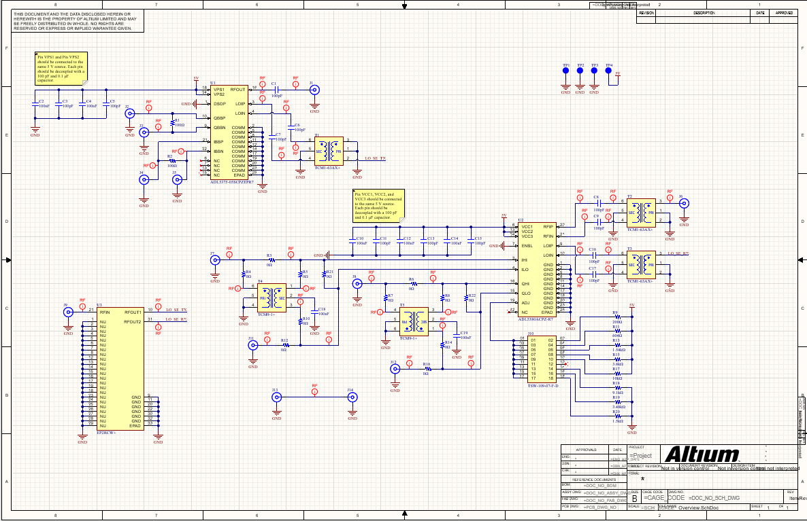

|
|
ProjectsSDR RF Frontend | ECE 1100 Discovery ProjectIntroductionThis project focuses on developing an RF frontent evaluation module for a software-defined radio (SDR), which is to be built in the future. The goal of this project is to enable wideband full-duplex communication across a channel. IQ Modulation and DemodulationThe RF frontend I want to design revolves around the zero-if (ZIF) architecture. The receiver must tune to the carrier frequency of the transmitted signal to mix it down to baseband and proceed with the processing required to extract the wanted information. Many ZIF architectures employ the use of IQ modulation and demodulation. The sum of two ampltiude modulated signals in quadrature (e.g cosine and sine) allows the implementation of almost any modulation technique at the output. This architecture also enables the decomposition of a modulated signal into easy to process baseband in-phase and quadrature signals, identical to the ones used to produce the transmitted signal. Using an IQ modulator IC and an IQ demodulator IC from Analog Devices is optimal since standalone mixers or connectorized components were much more expensive. SchematicThe RF frontend was designed in Altium and below is the schematic of the entire system, consisting of the two Analog Devices modulator and demodulator ICs and other passive components either necessary for operation or included for hardware configurability. ManufacturingThe PCB was ordered from a chinese manufacturer and was assembled by me. I learned how to solder small SMD components by hand to be able to solder the QFN packages for the RF ICs and the 0402 and 0603 passive components. Transmission Line CharacterizationAll transmission lines on the PCB were designed as 50 ohm coplanar waveguides. A test transmission line was included on the very right of the circuit board to obtain its s-parameters. Using a network analyzer at the Hive Makerspace, the s-parameters were easily found and acquired shown below. The results weren't too great since the dielectric material between the top RF signal layer and its reference ground layer is FR4, which is not very suitable for high frequency applications. However, it seems like up to around 2 GHz the s-parameters are decent.ConclusionThis taught me about IQ modulation and demodulation, RF impedance control, RF PCB design, and SMD soldering. The future for this project is to develop a complete software-defined radio with the used RF ICs to implement a variety of digital communication waveforms and possibly GPS signal processing. |